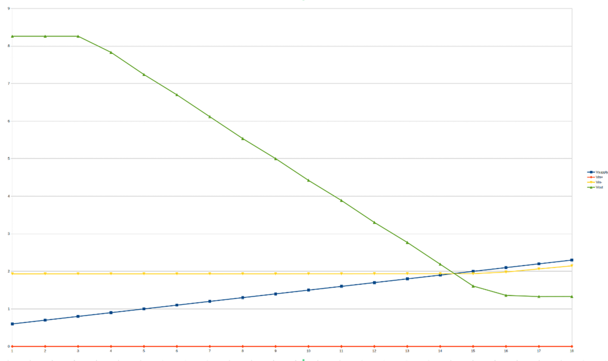

Inverting amplifier
The goal is to understand an inverting amplifier.
Goals
- [x] Document schematic in Kicad
- [x] Do a theoretical analyis
- [x] Implement schematic on breadboard
- [x] Test circuit and do measurements
Equipment used
| Equipment | Description |
|---|---|
| Peaktech 6075 | DC power supply |
| RS Pro RSDS 1204X-E | Oscilloscope |
| Uni-T UT161D | Multimeter |
Components
| Reference | Value | Remarks |
|---|---|---|
| R1 | 5.6k | |
| R2 | 1k | |
| 1x LM741CN | Operational amplifier |
Circuit

The opamp works by trying to make both inputs equal because of the negative feedback. As the input voltage on Vin- increases the Vout decreases.
The feedback is given by the feedback network with R1 and R2.
Formulas
Calculated gain
Calculations
Calculated gain with the resistor values given in the component list.
Practical measurements
Measurements done on oscilloscope with Vin- at 0.6V - 2.3V

Measurements done with multimeter

For all measurements
| Probe | Measurement |
|---|---|
| Yellow | Vin- |
| Purple | Vout- |
Oscilloscope measurements are not accurate as they are done with only 8bit vertical resolution.
Measurements
| Vsupply | Vin+ | Vin- | Vout |
|---|---|---|---|
| 0.6V | 0V | 1.932V | 8.260V |
| 0.7V | 0V | 1.933V | 8.260V |
| 0.8V | 0V | 1.933V | 8.260V |
| 0.9V | 0V | 1.933V | 7.830V |
| 1.0V | 0V | 1.933V | 7.240V |
| 1.1V | 0V | 1.933V | 6.700V |
| 1.2V | 0V | 1.933V | 6.117V |
| 1.3V | 0V | 1.934V | 5.535V |
| 1.4V | 0V | 1.934V | 5.001V |
| 1.5V | 0V | 1.935V | 4.421V |
| 1.6V | 0V | 1.935V | 3.886V |
| 1.7V | 0V | 1.936V | 3.302V |
| 1.8V | 0V | 1.936V | 2.769V |
| 1.9V | 0V | 1.937V | 2.188V |
| 2.0V | 0V | 1.938V | 1.608V |
| 2.1V | 0V | 1.981V | 1.360V |
| 2.2V | 0V | 2.065V | 1.328V |
| 2.3V | 0V | 2.146V | 1.330V |
Measurements done using multimeter.
As we increase the Vsupply voltage the Vout decreases as expected.
Changelog
| Date | Change |
|---|---|
| 2025-11-16 | Added both theoretical and practical analysis |